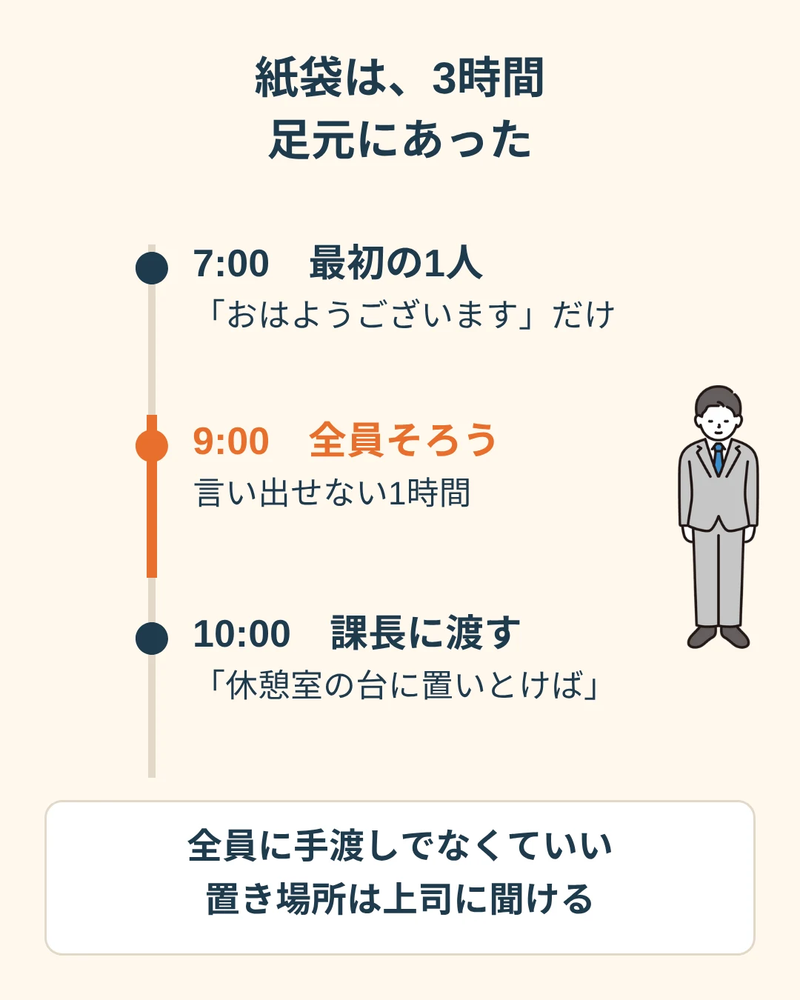
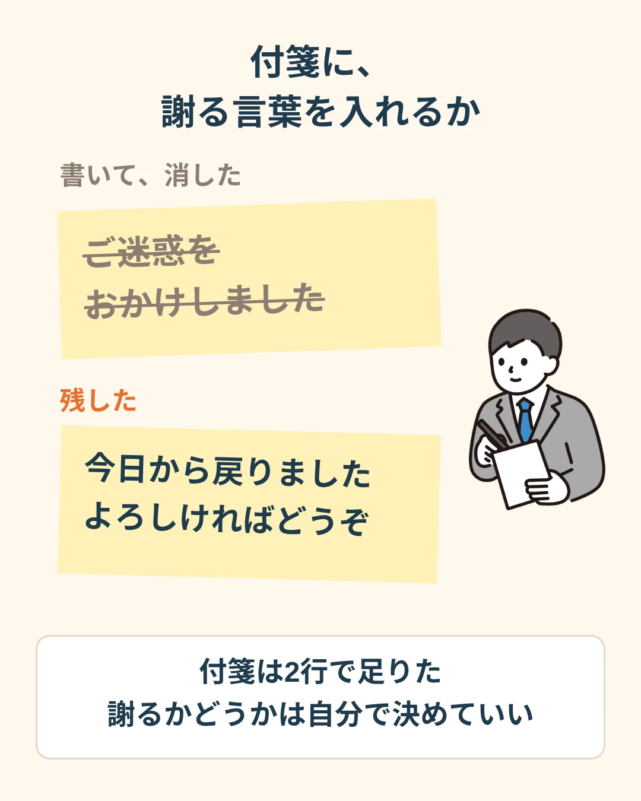
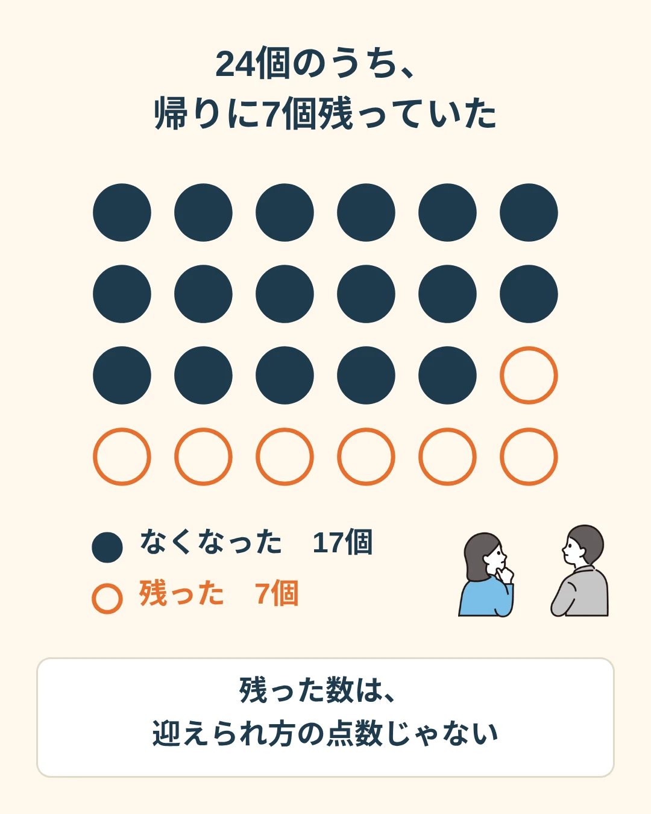
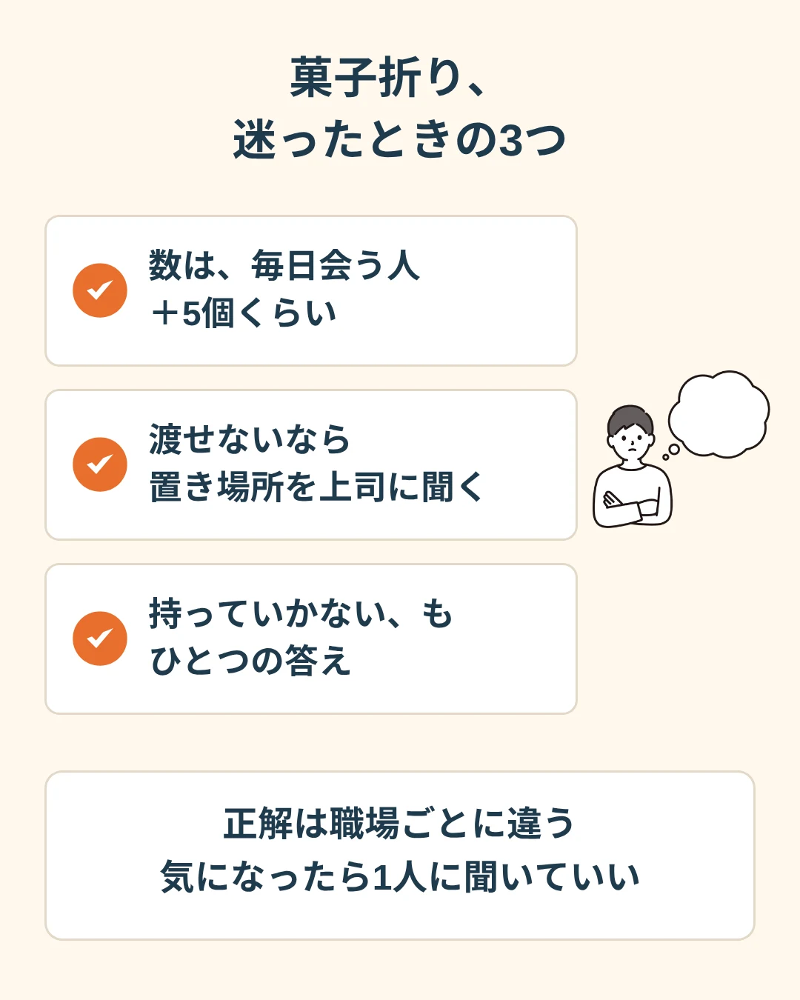
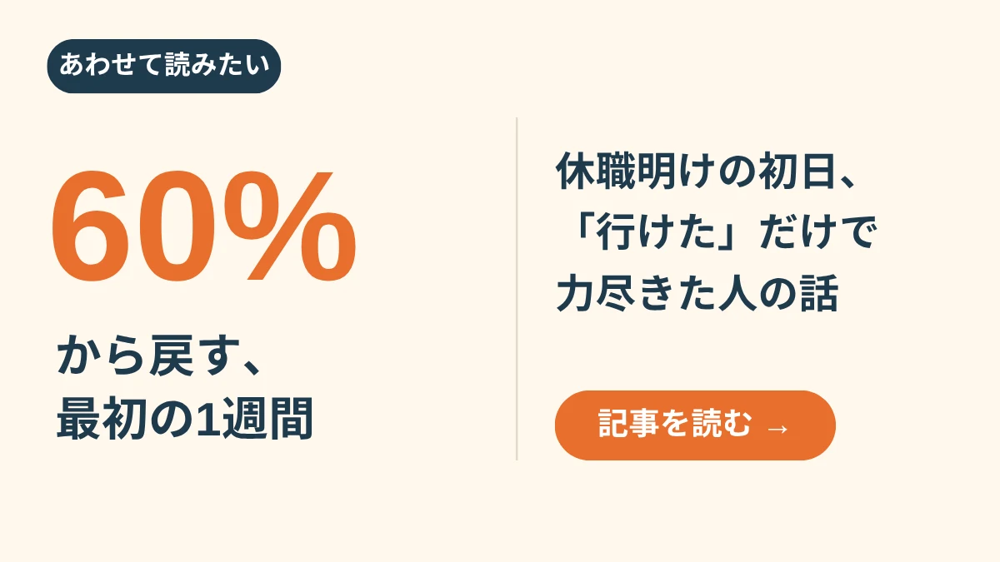
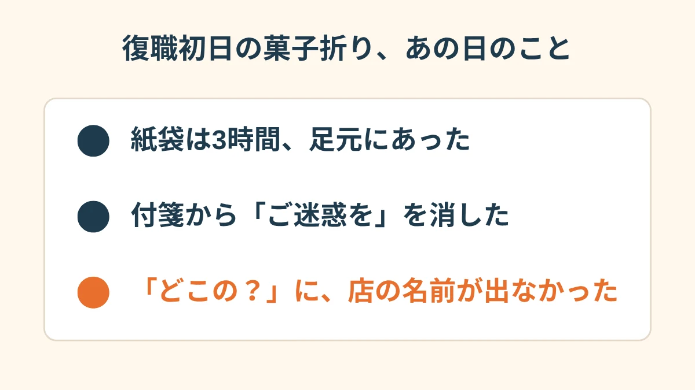

前の晩、スーパーのお菓子売り場で、事務所の人の顔を一人ずつ思い出しながら指を折った。
14人。倉庫のリーダーを入れて17人。
指を折りながら、明日いちばん最初に会うのは誰だろう、とそればかり考えていた。
前の晩、24個入りを選んだ
34歳。地方の物流倉庫の事務所で、入出荷の伝票と配車の段取りをしている。今年の3月から7月まで、適応障害で5ヶ月休職した。8月1日に復職。最初の1ヶ月は6時間勤務だった。
菓子折りを持っていくかどうかは、1週間くらい迷った。ネットで調べると「持っていくのが無難」と「いらない」が半々で、どっちを読んでも決まらなかった。
結局、妻の「持っていって損はないでしょ」で決めた。
うちの事務所はシフトがばらばらで、早番は7時、日勤は9時、課長は10時に来る。全員がそろう時間がない。だから個包装で、置いておけるものにした。フィナンシェの24個入り、1,620円。17人に、7個の余裕。
家に帰ったら、小学生の娘が「1個ちょうだい」と言った。あげられなかった。数が減るのが、なんだか怖かった。
風呂で「ご迷惑をおかけして、申し訳ありませんでした」を3回言った。3回とも、語尾が自分の声じゃないみたいで気持ち悪かった。
「私は持っていかなかったです。正直、なんで私が？って思ってしまって。仕事が回らなくて倒れたのに、お詫びのお菓子を配るのって変じゃないですか。でも当日、手ぶらで席に座ったら、それはそれで落ち着かなくて。誰も何も言わなかったです。言わないから、あれでよかったのか、今でも分からないんですけど」
最初の「おはようございます」で、渡しそびれた
7時5分。事務所の鍵はもう開いていて、早番のパートの佐々木さんがいた。50代の、休む前もよく飴をくれた人だ。
「あ、おはよう。戻ったんだね」
「はい、おはようございます」
それで終わった。紙袋は右手に持っていたのに、次の言葉が出てこなかった。佐々木さんはもう、入荷の伝票に目を戻していた。
紙袋を机の下、右足の横に置いた。9時に日勤の人たちが来て、「おかえりー」「無理しないでね」と言ってくれた。みんなすぐパソコンを開いた。キーボードの音がしはじめて、もう話しかけられる空気じゃなかった。
椅子を動かすたびに、紙袋の取っ手が足首に当たった。

10時。課長が来て、会議室で短い面談があった。座る前に、紙袋を差し出した。
「ご迷惑をおかけして、申し訳ありませんでした」
風呂で練習したとおりに言えた。課長は紙袋をちらっと見て、
「迷惑とかいいから。それ、休憩室の台に置いとけば。みんな勝手に取るから」
あっけなかった。ほっとしたのと同じくらい、何かを取り上げられたような気もした。3時間握っていたものの行き先が、5秒で決まった。

休憩室の電子レンジの横に、小さな台がある。箱を開けて、ふたを裏返して置いた。
付箋に「本日から復帰しました。ご迷惑をおかけしました。」と書いて、ペンが止まった。
謝ると、また「休んだ人」としてここに置かれる気がした。かといって、何も謝らないのは図々しい気もする。どっちも違う気がして、5分くらい付箋をにらんでいた。
二行目に線を引いて、新しい付箋に書き直した。
「今日から戻りました。よろしければどうぞ 佐野」

昼と3時と帰りに、箱を見に行った
昼休みに、休憩室へ箱を見に行った。22個。2個しか減っていなかった。
3時に、トイレのついでにまた見た。9個。
帰りに見たら、7個残っていた。
数えなくていいのに、数えていた。7個残っているのが、歓迎されなかった人数みたいに見えた。そんなはずはないのに。シフトで会っていない人がいるのも、自分で計算して7個多く買ったのも分かっているのに。

翌朝、箱はたたまれて、段ボールの回収のところに立てかけてあった。付箋はなかった。誰が残りを食べたのかは知らない。
3日後、倉庫の遅番のリーダーと廊下ですれ違った。60代の、普段ほとんどしゃべらない人だ。
「この前の菓子、うまかったよ。あれ、どこの？」
駅前の、と言いかけて、店の名前が出てこなかった。「駅前の、パン屋の隣の……」と言っているうちに、リーダーは「ああ」とうなずいて行ってしまった。
それだけ。それだけなんだけど、休んでから職場で仕事以外の話をしたのは、あれが初めてだった。気づいたのは、帰りの車の中だった。
「うちは職員が8人しかいないので、一人ずつ手渡しにしたんです。全員に『ご迷惑をおかけしました』って言って回って。4人目までは平気だったのに、5人目で急に声が震えて。相手のほうが困った顔してました。今思うと、全員に同じ謝り方をしなくてもよかったなって」
もし次に誰かが休みから戻ってきて、菓子折りのことを聞かれたら。言えそうなことは、このくらいしかない。

初日の帰り、運転しながら、まだ1日目なのに、もう1週間働いたみたいに疲れていた。「行けた」だけで力尽きた人の話を、そのあと読んだ。

休職明け、最初の1週間をどう過ごすか →菓子折りは、謝るための箱だと思っていた。でも、あの日の自分がほしかったのは、たぶん誰かと話すきっかけのほうだった。そのわりに、手渡しできたのは課長1人だけだったけど。
娘には、翌週、同じフィナンシェを1個だけ買って帰った。

この記事に、聞いてみたいことはありますか？
「自分の場合はどうなんだろう」と思ったことを、気軽に書いてみてください。いただいた質問は個別にお返事したうえで、匿名で記事にすることがあります。